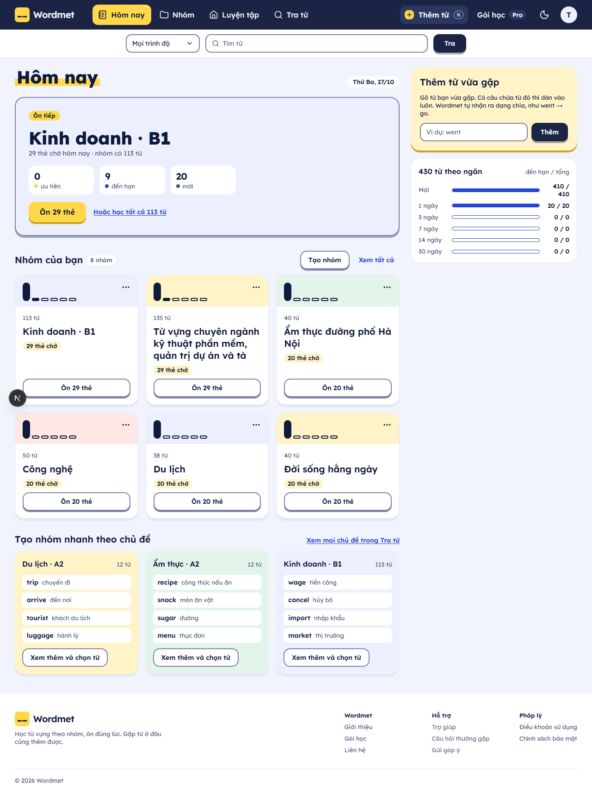
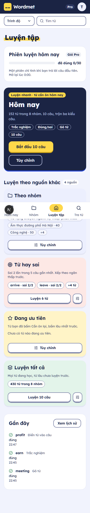

Nhớ từ bằng chính câu bạn đã gặp
Gặp từ mới trong phim, email hay tin nhắn công việc? Lưu nó cùng câu đó. Wordmet xếp lịch ôn và cho bạn luyện trên chính câu ấy.
Thêm từ vừa gặp trong vài giây
Gõ từ bạn vừa gặp, dán câu chứa nó nếu có. Wordmet tự nhận ra dạng chia, như went → go, rồi đưa từ vào nhóm bạn chọn.
- went bạn gõ
- go Wordmet tìm ra từ gốc
- câu bạn dán thành câu luyện

Ôn đúng lúc, không ôn thừa
Mới1371430ngày
Mỗi từ nằm trong một ngăn. Nhớ thì lên ngăn sau, lâu hơn mới gặp lại. Sai 2 lần trong 5 câu gần nhất thì từ vào danh sách luyện riêng.

Luyện theo nhiều kiểu câu
Gói Miễn phí
- Trắc nghiệm nghĩa
- Chọn nghĩa đúng của từ.
- Đúng hay sai
- Nghĩa này có đúng với từ không.
- Gõ từ
- Theo nghĩa, hoặc vào chỗ trống trong câu.
- Điền từ vào câu bạn đã lưu
- Câu bạn gặp ngoài đời thành bài luyện.
Gói Pro, có AI
- Câu mới do AI viết
- Quanh đúng từ bạn đang học.
- Chọn nghĩa trong câu
- Từ có nhiều nghĩa, câu cho biết nghĩa nào.
- Tra từ bằng AI
- Khi từ chưa có trong kho.
AI chỉ viết câu. Đáp án của bạn được chấm bằng quy tắc, không tốn lượt AI.
Bắt đầu miễn phí
| Miễn phíKhông giới hạn thời gian | ProChưa mở bán | |
|---|---|---|
| Ôn thẻ và lịch ôn | Không giới hạn | Không giới hạn |
| Nhắc ôn qua email | Có | Có |
| Phiên luyện mỗi ngày | 3 | Nhiều hơn |
| Câu AI và tra bằng AI | Không | Có |
| Quảng cáo | Có thể có | Không |
| Dùng thử | Chờ chốt Q2 |
Câu hỏi thường gặp
Wordmet có miễn phí không?
Có. Gói Miễn phí gồm ôn thẻ, lịch ôn, nhắc qua email, tra từ và 3 phiên luyện mỗi ngày. Gói Pro thêm câu AI và tra bằng AI, hiện chưa mở bán.
AI có chấm bài của tôi không?
Không. AI chỉ viết câu luyện. Đáp án của bạn được chấm bằng quy tắc, nên không tốn lượt AI.
Người khác có thấy từ và câu tôi lưu không?
Không. Từ và câu bạn tự thêm chỉ hiện trong tài khoản của bạn.
Có app điện thoại không?
Wordmet mở trên web trước, dùng được trên trình duyệt điện thoại. App điện thoại làm sau.